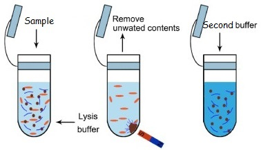

The Detailed Abstract
Process overview [Source (PMC7202819)]
Step 1
In india, to identify asymptomatic carriers we need frequent testings which is a fantasy as this point as we aren't even close to testing the population once. AIM: Reach Everyone! Every Test Counts. To meet the demand of a 130 crore peple, we need to be sure that the subject isn't in the viral incubation phase when tested. Any test that require blood samples or detect the body's response fails...simply because it takes time to show up. So, we cant rely on serology tests. We need a way to detect an immidiete infection. A prominent sample collection media is saliva, it is in direct contact with the ACE2 receptors itself and can be collected without any medical training or devices.(No needles/swabs). If the subject is infected it will show up in the saliva irrespective of the infection time. To collect the sample, subject chews a sweetened cotton ball stimulating saliva formation (like a chewing gum). Once the ball is covered with saliva, the probabilty of virus capture multiplies with its incubation time in the bucal cavity.Step 2
Practically there is no way our medical response team can reach out to a 130 crore people in time. People need to test themselves. The procedure has to be simple and cannot use any special equipment and be conducted at room temperatures. The One-Pot Approach: Obtain a prefect blend of chemicals that can 1. Break the viral capsid 2. Immobilize rnase 3. Maintain an overall acidic pH to avoid RNA hydrolysis. The extraction of target RNA: The pot will also contain anti-sense fragments of the target RNA. Hybridization is highly a highly accurate process and at the correct overall pH they can be very very precise. (Acidity increses mismatching and Basicity promotes denaturation). So these "Probes" can be used to extract our target RNA strand from the pool. These probes can be mangetically manipulated by attaching a ferrimagnetic metal ion to its phosphate backbone. The ions can be bonded by a process similar to et-OH precipitation that decreses the dielectric constant of the media. The problem here is that this ion separates again upon the change in the permitivity, so a binding agent that stabilizes the ion-phosphate bond rendering it inactive to any further reaction is needed. Hint: the binding agent will form an organometallic complex.Step 3
Once these probes have hybdzed they will be magnetised and the supernatant is disposed. The only thing that now remains is the non-reacting probe and the Target RNA attached to it, if any. The solution is now demagnetised and a second buffer is poured. The RNA reacts with this buffer. Any color change indicates a postive test. A color change is easily percieved by laymen, as opposed to any other chemical change. The HCl primes the RNA to act as a catalyst to convert HCl into NaCl. As the reaction proceeds the overall pH changes from acidic to neutral which can be confirmed via a colorimetric pH indicator. (The reaction works with one RNA strand as well, but the rate of the reaction would be dead slow).Reaction rate ∝ RNA Conc. ∝ 1/ [Conc. of the Reactants]
It's a trade off and I intend to find the initial concentrations such that the reaction completes in the shortest time possible. This reaction essentilly eliminates the dependance on bio entities & the need for amplification drastically reducing the testing time.